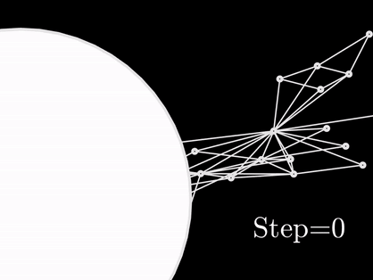
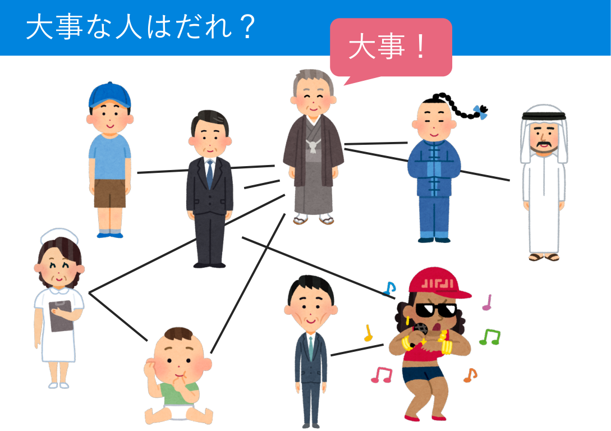
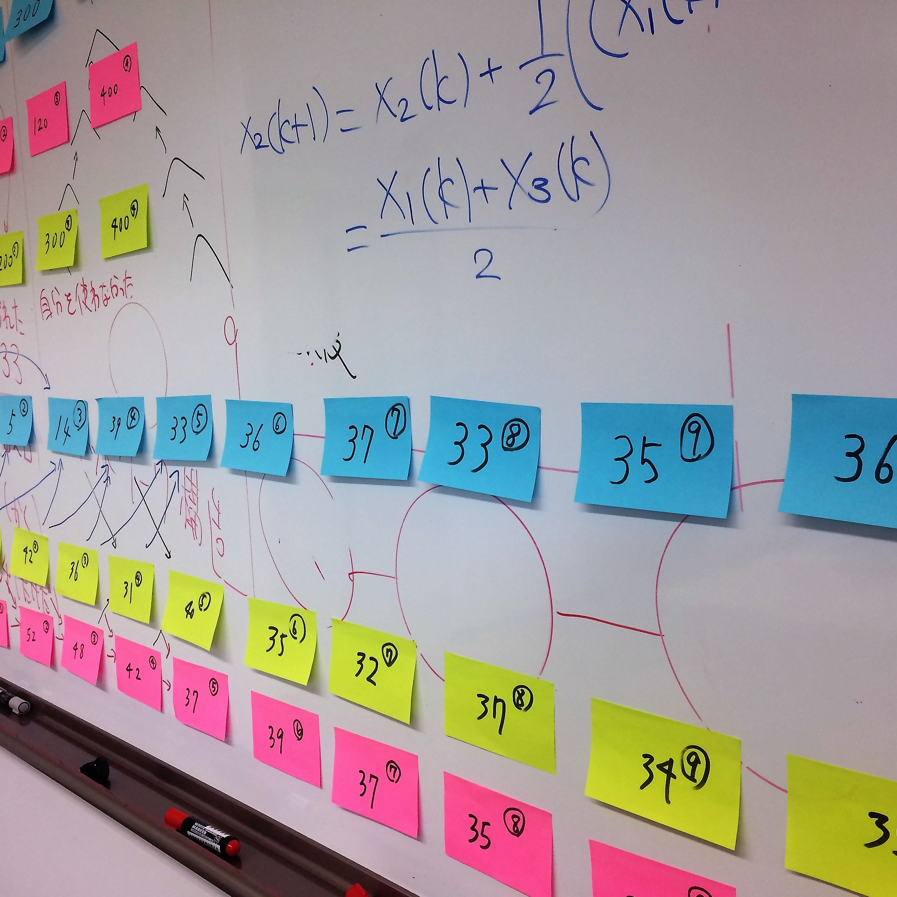

研究普及活動
複雑ネットワークや制御工学に関する普及活動を行っています．
ランダムウォークでまなぶ複雑ネットワーク
ランダムウォークを使ったシユレーションを交えて複雑ネットワークの基礎について学びます．

MATLABでランダムウォークをシミュレーションして，Googleページランクを計算します．

2018年度 生駒市立中学校出前授業（生駒市webページ）
じゃんけんでまなぶ複雑ネットワーク
じゃんけんを使ったグループワークを交えて複雑ネットワークの基礎を学びます．

じゃんけんでSusceptible-Infected-Susceptibleモデルを体験します．

2017年度 生駒市立中学校出前授業
ふせんでまなぶ複雑ネットワーク

ふせんで線形合意制御プロトコルを体験します．


2018年度 研究室マッチング